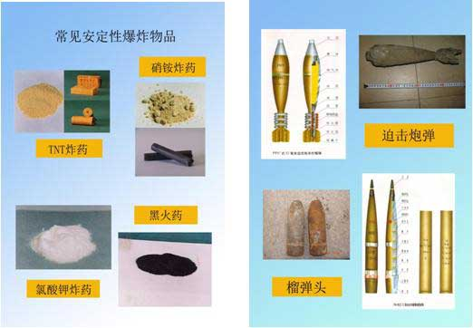
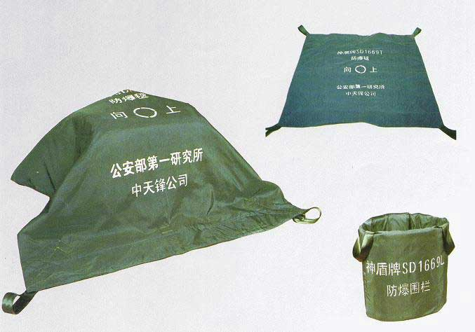
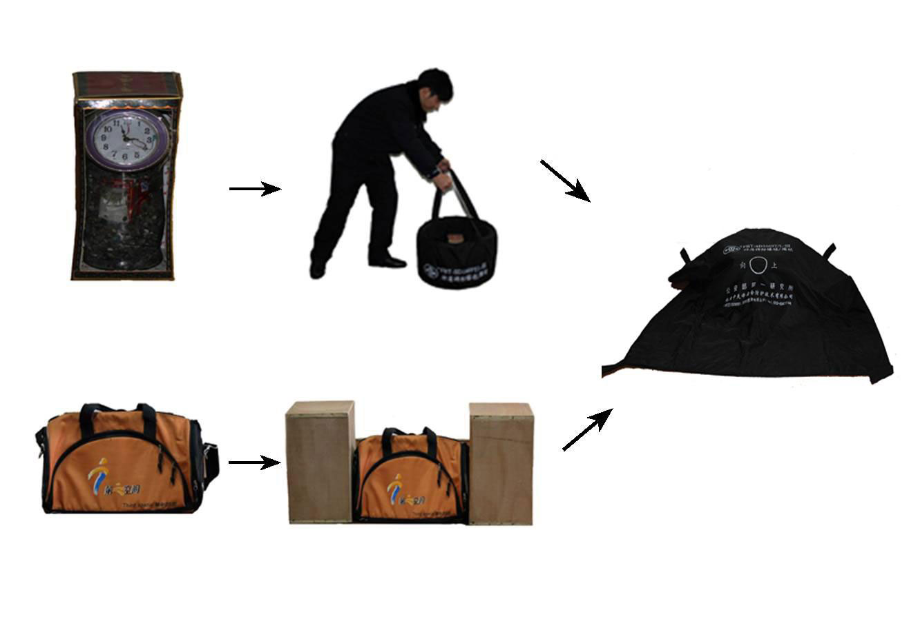
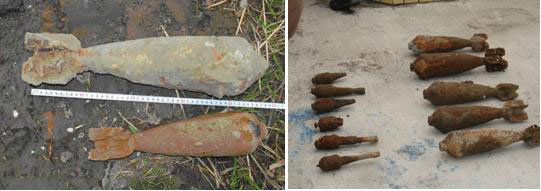
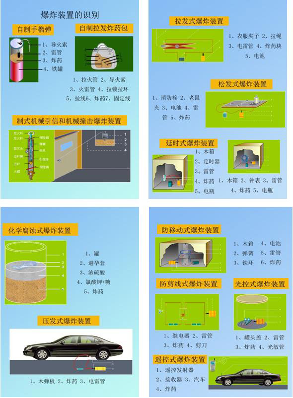

重点提示：
在碰到各种涉爆现场时，应立即封锁现场，疏散群众，不宜触动可疑物，及时向指挥中心报告，请求专业力量前来处置。
一、总则
适用范围
(一)本章所指涉爆现场包括：已爆现场和未爆现场。未爆现场分为扬言爆炸现场、疑似爆炸物现场、持爆炸物劫持人质或扬言自爆现场、废旧炮弹现场。
(二)涉爆现场处置的对象主要是：在各种现场中出现的爆炸物，包括民用爆炸物、自制爆炸装置和废旧炮弹。
(三)常见爆炸物及特性：
常见安定性爆炸物品，包括常见民用炸药和各种火工品等（见图一）。常见炸药安定性较好；TNT、硝铵炸药有雷管才能引爆；黑火药和氯酸钾怕火、怕撞，应小心对待。

图一 图二
1、废旧炮弹，主要指社会面发现的各类废旧炮弹（见图二）。其相对较稳定，不触发引信，一般情况不会爆炸。在处置过程中要轻拿轻放，尤其是搬运过程中要小心谨慎。
2、自制爆炸装置，主要包括拉发、压发、化学腐蚀、电起爆等起爆方式的爆炸物（常见自制爆炸装置见附件）。具有一定的危险性，在不明情况下，严禁触动。
处置原则
(一)涉爆现场处置应遵循以下工作原则：
1、统一指挥原则。各级、各单位处置力量由指挥部实行统一指挥；
2、安全第一原则。处置工作以确保安全为前提，排除一切与安全相冲突的处置措施；
3、专业处置原则。涉爆警情的爆炸物由配备专用装备的具备相关技能的专业警力负责处置。
组织指挥
(二)涉爆现场(废旧炮弹现场除外)由市局牵头组织处置，设立现场指挥部，由市局领导担任现场指挥员，属地公安分局、县（市）公安局领导和市局特警、刑侦、治安等部门负责人为成员。
在市局领导到达现场前，属地公安分局、县（市）公安局领导先行履行现场指挥员职责。
(三)特别重大的涉爆现场处置工作，除现场指挥部外，视情在市局指挥中心设立基地指挥部，由市局主要领导担任总指挥，与现场指挥部保持密切联系，统筹现场和面上指挥工作。
相关单位职责
(四)指挥中心
1、迅速指令调度事发地公安机关和市局相关部门出警处置涉爆警情，并及时报告市局领导；
2、做好涉爆现场情况及处置工作等信息的上传下达；
3、协调卫生、环保、供电、供气等部门配合开展工作;
4、承担基地指挥部的辅助指挥工作。
(五)特警支队
1、会同刑侦部门对特定场所进行搜索，确定该场所是否含有爆炸物；
2、安全排爆；
3、协助治安支队安全转运废旧炮弹至指定地点。
(六)刑侦支队
1、会同特警支队对特定场所进行搜索，确定该场所是否含有爆炸物；
2、对持爆炸物劫持人质或扬言自爆情形的，确定专业人员与犯罪嫌疑人对话并掌控其情况，提出应急处置措施；
3、对涉爆案件开展侦破。
(七)治安支队
1、指导、处置废旧炮弹；
2、协调省军区炮弹专家前来鉴定、处置疑似化学弹；
3、转运、储存、销毁废旧炮弹。
(八)交警支队
1、根据指令，对以涉爆现场为中心一定半径范围内的道路，采取交通管制、疏导等措施。
2、转运危险性爆炸物及一次性转运废旧炮弹数量20枚以上的，应合理确定安排运输路线并开道护送。
(九)网警分局
1、对互联网上涉及我市的涉爆案（事）件舆情信息进行监控，做好网上舆论引导工作，封堵、删除有害信息，依法查处网上恶意造谣诽谤及恶意炒作者。
2、协助开展涉爆案件侦破工作。
(十)技侦支队
协助开展涉爆案件侦破工作。
(十一)反恐支队
对涉嫌恐怖袭击的爆炸现场，根据反恐预案开展工作。
(十二)公共关系处
负责涉及我市的涉爆案（事）件舆情应对，对可能产生的涉警负面舆情或影响社会稳定的舆情，迅速启动舆情危机处置预案，予以妥善处置。
(十三)公安分局、县（市）公安局
1、接到发生涉爆报警或上级指令后，迅速组织警力，携带防爆毯、警戒带等装备赶赴现场，做好现场封控、现场施救、现场保护、秩序维护等工作；
2、迅速将涉爆现场有关情况上报市局指挥中心；
3、开展涉爆案件调查取证及案件侦破工作（废旧炮弹处置除外）。
二、扬言爆炸现场处置
扬言爆炸现场是指有人以电话、书信、短信、口传、电子邮件等方式，向警方或其他政府机构、社会组织、企事业单位报称某公共场所或公私设施内放置炸弹或其他爆炸装置，并可能在某时刻爆炸的现场。
(一)对扬言爆炸现场，应遵循“宁可信其有，不可信其无”和“既要内紧外松、防止造成恐慌，又要尽快甄别真伪，做好应急处置准备”的原则开展工作。
(二)案发地公安分局、县（市）公安局在接到市局指挥中心指令或者报警后，局领导应迅速赶赴现场，组织本局相关单位携带防爆毯、警戒带等装备到场处置。
(三)先行到达现场的属地公安机关和市局相关单位警力，应当迅速开展以下工作：
1、根据下表所列条件对涉爆警情进行初判，经现场指挥员同意，采取相应的封控措施。
扬言爆炸现场封控措施参照表
|
等级
依据 |
一级
完全封闭疏散 |
二级
部分封闭疏散 |
三级
只出不进 |
四级
正常进出 |
|
威胁信息的具体化程度 |
时间确定
地点确定
对炸弹相关专业术语表述清楚 |
时间确定
地点确定
对炸弹相关专业术语表述清楚 |
时间不确定
地点确定
对炸弹相关专业术语表述不很清楚 |
时间不确定
地点确定
对炸弹相关专业术语未做表述 |
|
是否发现可疑物 |
发现 |
未发现 |
未发现 |
未发现 |
|
所处区域敏感程度 |
人员高度密集
地处繁华闹市 |
人员较密集
流动性较大
地点敏感性强 |
人员较密集
流动性较大
地点较敏感 |
人员较密集
流动性超大
地点不很敏感 |
|
建筑结构复杂程度 |
中型商场、超市、影剧院、中小型宾馆饭店 |
党政机关、医院、火车站、机场、三星以上宾馆饭店 |
类似广场、商业街等难于逐点严密控制的区域 |
一般场所 |
|
基本措施 |
疏散所有人员，封闭整个区域 |
疏散重点部位人员，封闭重点部位 |
封闭重要通道，控制人员流量 |
派便衣监控正常进出 |
2、迅速组织受威胁目标的保卫部门和内部员工进行自查。
检查方法：按照从上到下、从里到外的顺序进行细致观察、检查，若发现可疑物品，严禁触动并立即报告。
（四）根据现场指挥部指令，市局刑侦支队、特警支队专业处置力量利用搜爆犬、特种装备对扬言爆炸现场进行搜爆。
（五）市局其他相关职能部门，根据实际需要及职责，协助属地公安分局、县（市）公安局开展案件侦破工作。
（六）
若扬言爆炸涉及大型活动现场，应当做到：
1、若扬言爆炸涉及地点不明确，由现场执勤民警对其责任区进行网格化搜爆；
2、若扬言爆炸涉及地点为重点区域（如主席台、贵宾室等），即使该区域事先经过场地安检，应再次进行安全检查，并由市局刑侦支队、特警支队专业处置力量进行搜爆；
3、若扬言爆炸发生在观众进场前，应加强人身安检工作和相应安检措施；
4、若扬言爆炸发生在场地安检前，应增加安检人员和相应设备数量，提高安保等级。
（七）
在检查、搜爆过程中，若发现爆炸可疑物，按照《疑似爆炸物现场处置》的要求开展各项工作。若没有发现爆炸可疑物，由现场指挥部综合各相关情况，决定是否恢复正常状态。
三、
疑似爆炸物现场处置
疑似爆炸物现场是指发现爆炸可疑物或者危险性爆炸装置的现场。
(一)处置民警应遵循“不盲目触动”的原则。在未确认安全前，严禁非专业人员靠近、触动、搬运疑似爆炸物。
(二)案发地公安分局、县（市）公安局在接到市局指挥中心指令或者报警后，局领导应迅速赶赴现场，组织本局相关单位携带防爆毯、警戒带等装备到场处置。
(三)先期到达现场的属地公安机关和市局相关单位的警力，应根据疑似爆炸物的大小、外包装、有无触动过等情况,有序开展以下工作：
1、疏散群众，设置警戒区域，警戒区域的范围以疑似爆炸物为中心半径80米以上。
注意：疏散群众时，应以适当理由，劝告离开“涉险”区域，防止引起恐慌；同时平和、文明地劝散围观群众，维护好现场秩序。
2、采用照相、录像等方式对疑似爆炸物及周围情况拍摄固定。
3、清除周边易燃易爆等危险物品，并用防爆毯覆盖疑似爆炸物。
实施防爆毯覆盖时，应先用防爆围栏围住疑似爆炸物，再由两人分别扯住防爆毯四个角，虚盖在疑似爆炸物上。如现场没有围栏或爆炸物较大、现成围栏不够用时，可以利用现场地形地物作临时支撑物，再虚盖防爆毯。要掌握使用防爆毯覆盖疑似爆炸物的操作规程，切忌用防爆毯包裹。
防爆毯、防爆围栏

防爆毯覆盖方法
4、及时开展调查访问、视频监控调取等工作，了解掌握是否有可疑人员在案发现场逗留以及可疑人员的身份信息、体貌特征等线索。
(一)特警支队专业处置力量到场后，利用X射线检查仪、炸药探测仪等装备器材对疑似爆炸物进行检测，判明其内部结构及是否含有炸药成份等情况，将检测结果报告现场指挥部。根据现场指挥部决定，采用技术手段分解疑似爆炸物。分解结束后，将所有证物移交给属地公安分局、县（市）公安局刑侦大队或市局刑侦支队。
(二)爆炸物需转移处置的，案发地公安分局、县（市）公安局应事先确定安全空旷地点，会同交警部门确定转移路线，并报现场指挥部同意，由特警支队负责转移，交警部门开道护送。
(三)案发地公安分局、县（市）公安局刑侦大队或市局刑侦支队及时开展现场勘查，收集现场相关物证和信息。
(四)市局其他相关部门，按照各自职责开展工作。
四、
持爆炸物劫持人质或扬言自爆现场处置
持爆炸物劫持人质或扬言自爆现场是指犯罪分子持爆炸物挟持人质（并确有疑似爆炸装置）或者持爆炸物扬言自爆的现场。
(一)持爆炸物劫持人质或扬言自爆现场处置工作应遵循“谈判为先、以人为本”的原则。
(二)市局指挥中心应及时报告市局领导、通知市局相关部门，并视情协调卫生、环保、供电、供气等部门赶赴现场。
(三)属地公安分局、县（市）公安局在接到市局指挥中心指令或者报警后，局领导应迅速赶赴现场，组织本局相关单位携带警戒带等装备到场处置。
(四)先行到达现场的属地公安机关和市局相关单位的警力，在现场指挥员的统一指挥下迅速开展以下工作：
1、组织民警对现场群众和危险物品进行紧急疏散、转移，严密保护要害目标，并将现场情况逐级上报。
2、对现场进行封控，设置外围警戒区，外围警戒线应划在爆炸物的杀伤范围之外（一般情况下，以爆炸物为中心半径80米以上），如果现场环境条件允许，应将外围警戒线设在犯罪嫌疑人可视范围之外，以避免围观群众对犯罪嫌疑人产生影响。
3、迅速了解犯罪嫌疑人、被劫持者的个人信息和现场周边的基本情况，查清事情发生的时间、起因等，与犯罪嫌疑人进行交涉，稳定其情绪，尽量将其引导至安全、空旷和人员较少的地方。
(五)特警支队等专业处置力量到达现场后，在劫持或自爆中心现场设置核心警戒区，核心警戒区一般应设在可视犯罪嫌疑人的范围之内，在保障安全的前提下，应尽可能地接近犯罪嫌疑人。核心警戒区的围控工作由特警支队负责。
(六)刑侦支队选派专业谈判人员进行谈判，特警支队派员协助，以便观察、判明犯罪嫌疑人所持爆炸装置的真伪和类型，为现场指挥部决策提供依据。
(七)若谈判成功，专业谈判人员应指令犯罪嫌疑人将疑似爆炸物放置在安全地点。人、物分离后，按照《疑似爆炸物现场处置》的要求开展各项工作。
若谈判失败或出现强行解救时机的，由现场指挥部根据情况组织特警支队突击队员开展强行解救。在制服犯罪嫌疑人后，排爆人员应先对疑似爆炸物进行鉴别，并将疑似爆炸物从犯罪嫌疑人或者人质身上分离。犯罪嫌疑人和人质脱离现场后，按照《疑似爆炸物现场处置》的要求开展各项工作。
(八)现场指挥部决定强行解救时，应向基地指挥部或市局主要领导报告强行解救方案，具体解救时机由现场指挥部依据现场情况下达指令。
(九)市局其他相关职能部门在处置过程中，按照各自职责开展工作。
五、
已爆现场处置
已爆现场是指已经发生爆炸的现场。
(一)已爆现场还可能存在其他没有爆炸的炸弹，处置工作必须遵循“先搜爆、排爆，再勘查现场”的原则。
(二)案发地公安分局、县（市）公安局在接到市局指挥中心指令或者报警后，局领导应迅速赶赴现场，组织本局相关单位携带警戒带等装备到场处置。
(三)先行到达现场的属地公安机关和市局相关单位的警力，在现场指挥员的统一指挥下，迅速开展以下工作：
1、组织民警对现场进行封控，划出警戒范围（以爆炸残骸飞散的最远距离为限；情况不明时，以距炸点半径50米为准），疏散周边群众。
2、现场若有人员伤亡的，立即开展现场急救，并通知120到场运送受伤人员。
3、及时开展人员走访、视频查阅等调查工作，了解掌握爆炸发生时有无人员伤亡、有无烟雾、是否有可疑人员在案发现场逗留以及可疑人员的身份信息、体貌特征等情况。
(四)根据指令，市局刑侦支队、特警支队专业处置人员赶赴现场进行搜爆。若现场搜出爆炸物，按照《疑似爆炸物现场处置》的要求开展各项工作；若没有搜出爆炸物，由案发地公安分局、县（市）公安局刑侦大队或市局刑侦支队勘查现场，收集证据。
(五)市局其他相关部门，按照各自职责开展工作。
六、
废旧炮弹现场处置
废旧炮弹现场是指在日常社会活动中发现，战争年代或其他特殊情况下遗留的制式废旧炮弹的现场。

废旧炮弹
(一)市区（包括萧山、余杭）的废旧炮弹现场处置，由市局治安支队统一负责。
1、市局治安支队、属地派出所在接到市局指挥中心指令或者报警后，立即派出警力赶赴现场处置；
2、处警民警到达现场后，迅速进行封控，划出警戒范围（半径不小于30米），疏散周边群众；
3、根据市局指挥中心指令，特警支队排爆队员前往现场，配合治安支队处置废旧炮弹并转运至危险品仓库或收缴入库；
4、交警部门按规定职责，配合做好处置工作。
(二)富阳、临安、桐庐、建德、淳安五县（市）公安机关，按照上述流程和工作要求处置本地发现的废旧炮弹。治安支队、特警支队视情派员指导。
(三)废旧炮弹收集到一定数量后，由市局治安支队负责集中销毁。
附件：常见自制爆炸装置
